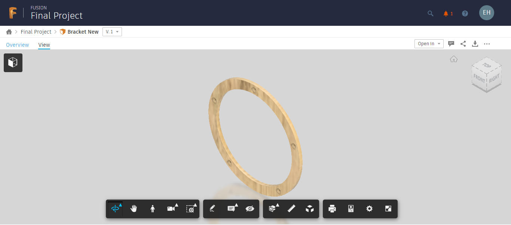
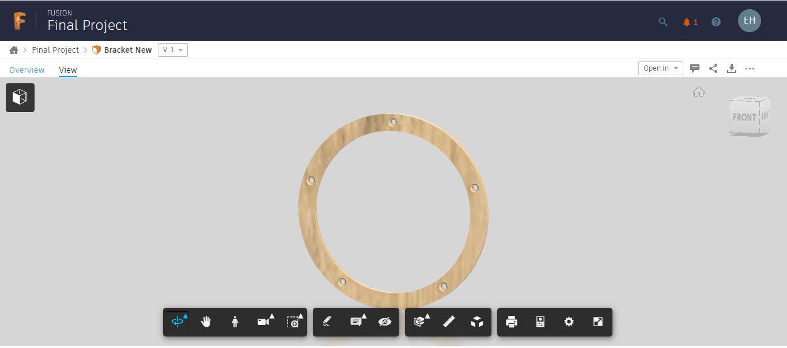
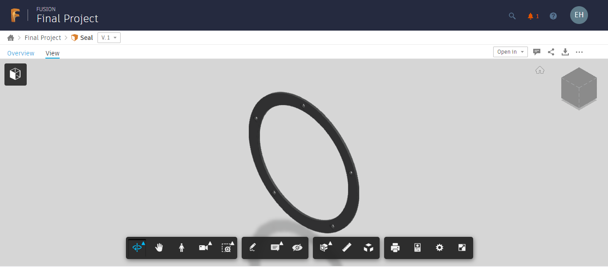

Næsta Mótorhjólið í safnið.
CNC fræsing er gífurlega vinsæl og má nefna hér á landi Framleiðslu Össurar í sínum stöðtækjum þar sem CNC vélar eru látnar sjá um allskyns fræsun á hinum og þessum íhlutum. Einnig eru flest renniverkstæði komin með slíkar vélar og bjóða þær uppá mannlausan kost þar sem hægt er að vinna sólrhringum saman á þess að stoppa. Össur t.d. lætur sínar vélar keyra stanslaust og á nóttuni líka án eftirlits.
Hvað okkur varðaði var eiginlega ekki mikil partur í þessu verkefni sem fól í sér CNC fræsingu. Liggja miklar pælingar á bakvið slíka fræsingu og hinar ýmsu tennur til taksins sem hafa sína kosti og galla. Vildum við frekar hafa 3D prentað skermin sem kemur framan á hátalaran og festir hann en ákváðum við að CNC fræsa hana og er allt klár til þess verks. Á myndum hér að neðan má sjá hvernig stykki við vildum fræsa út framan á hátalaran.
Viljum við taka fram að VCarve skrárnar eru tilbúnar en ekki er hægt að exporta að svo stöddu vegna þess að í augnablikinu er stuðst við Free Trial á myhub
 3D Prentun er magnað fyrirbæri og frekar ný í sögu iðnaðins. Hefur 3D prentun rutt sér gífurlega til rúms og bíður hún uppá ótal möguleika sem td CNC fræsun gerir ekki. Sé vilji fyrir hendi að skoða nánar 3D prentun er einstaklingum bent á heimasíðu hvers einstaklings en þar má sjá mjög ítarlega hvernig 3D prentun fer fram frá því að teiknað er til lokastykki.
Til þess að hátalarinn sé þéttur við kuðungin í Lokaverkefni okkar, var hugsunin að 3D prenta úr mjúku plasti einhverskonar þéttingu sem svipar til gjarðarinar hér að ofan en vegna þess að hún er úr plasti þá væri þægilegra að 3D prenta hana, til að mynda minni sóun á efni, minni sóðaskapur og heilt yfir mikið auðveldara. Ef það er eitthvað sem þessi áfangi og þessi verkefni öll hafa kennt okkur þá er það að einfalda hlutina eins unt og það mögulega er. Hér að neðan má sjá mynd af þéttinguni em kemur á milli hátalara og kuðungs.

Næsta Mótorhjólið í safnið.

kemur.

Meira
.